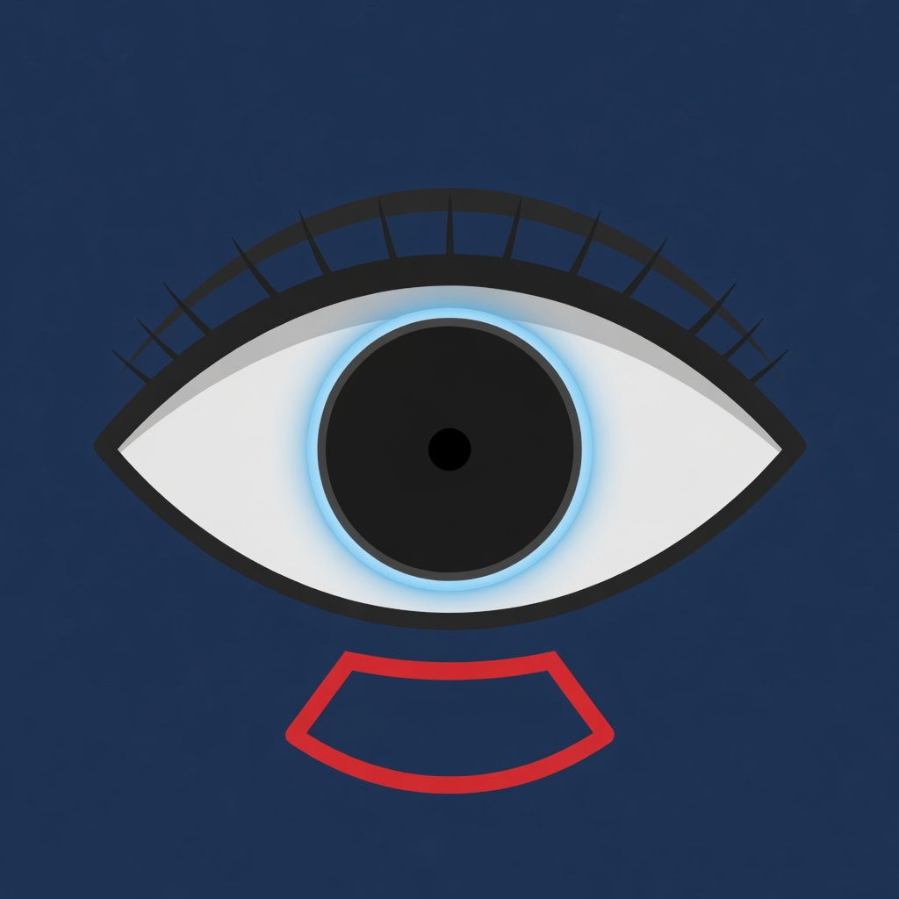

About 40 cm from your eyes. Me has a distance stepper if you train closer or farther. Landscape drills want the phone sideways, thumbs on the two halves when a drill says so.
Some drills use a short flash. Turn on Reduce flashing in Me if you or anyone in your family has a history of seizures or epilepsy, and talk to a doctor before you train. The app also keeps flashes under a hard rate limit.
The Vision Score is a personal index of your drill results on this phone. It is not an eye exam, not a concussion screen, and not a prediction of your save percentage.
Charts can be shared from the off-ice exercise and printed. Ball drills need a clear space. Stop if anything doubles or a headache starts, and see an optometrist or ophthalmologist if vision changes.
The daily reminder is off until you turn it on. Pick a time in Me. PuckSight does not notify between 9:30 p.m. and 7:00 a.m.
Free play covers the core drills, week 1 of Goalie Foundations, the pre-game warm-up, and 30 days of history. Premium is monthly, yearly (7-day trial), or lifetime. It opens Low-Light, higher levels, full history, CSV export, and the Goalie Crease theme. Restore purchases is in Me. If the App Store has not listed the products yet, the paywall says so and the free drills still run.
Me → Delete all data removes the profile, sessions, and logs from this phone.
PuckSight is a sports-training app. It is not a medical device. © 2026 Justin Novikow